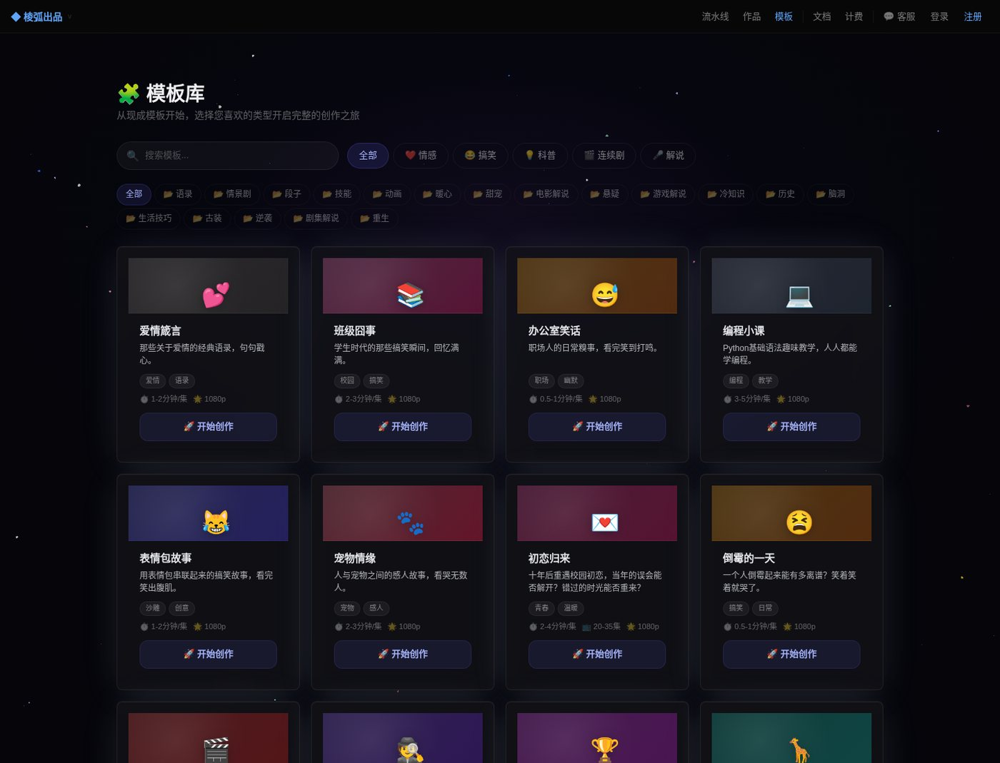

如果你正在其中某一条上卡住，大概率我能直接接手。
一套 AI 内容生产平台，从剧本到成片，11 个生产步骤，多用户、计费、可重做。不是 demo。
棱弧 AI 短剧工坊 —— 一句话或一段大纲，自动写剧本、配音、出画面，直接给成片。下面都是真实界面截图，不是设计稿。

把项目里的故障写成能看懂的文章。别人常常是从这些文章找到我的。
开发环境 100% 复现不出来的状态丢失，以及 preload 引发的连接池问题
不 OOM 却慢十倍、脸崩——判据是 GPU 利用率，不是显存占用率
21 个故障的分类统计：90% 和 AI 无关
成本结构、废片率这个真正的成本杀手、自建与 API 的临界点
回调 302、401、解密失败，以及退款时最容易算错的那笔账
都是能直接读的技术记录，不是空壳。
都是从项目里摔出来的，不是从书上抄的。
demo 到上线之间隔着二十来个工程问题：并发、计费、重试、状态、权限、时区、缓存、回滚。这些问题和 AI 一点关系都没有，但它们决定产品能不能活下来。我见过的 AI 项目，九成死在第二十个问题上，不是死在模型上。
一条片子的成本 85% 在视频生成。把供应商从 A 换成 B，最多省两成；把废片率从 3 倍压到 1.5 倍，直接省一半。所以钱要花在首帧门禁、提示词检查、短镜优先这些地方，而不是天天比价。
单卡 24G 能跑 1.3B 级模型，跑不动 14B 级。硬跑的结果不是报错，而是每一步都在 CPU 和显卡之间搬权重——慢十倍，画质还崩。认清边界比硬撑划算：本地做能做的，剩下的交给云。
角色、场景想从正文里用正则提取，迟早会漏、会串、改名就全断。一份显式的注册表，前期多花一天，后面少炸十次。这条放在任何多步骤的生产流程里都成立。
用户不满意就重做，是这套系统里最贵的成本。所以宁可让他在分镜、首帧、提示词这几个便宜阶段多确认几轮，也不要让他等到成片才说「不行」。这一条改的不是技术，是产品设计。
只列真正上过生产的东西。
说清楚你现在卡在哪、想做到什么程度，我回你方案和报价。
476743538@qq.com ↗工作时间内 4 小时内回复。需要微信或电话，邮件里说一声。
AI 功能从原型到上线 · 已有系统疑难排障 · 模型部署与显存调优 · 中文文档与数据自动化 · 成本结构优化
纯视觉设计与品牌 · 只写提示词不落系统 · 只出方案不写代码 · 效果说不清怎么验证 · 需要驻场坐班
发邮件写清这四件事，我第一封回信就能给判断和报价：
① 想做什么（一句话说清目标） ② 现在到哪一步（只有想法 / 有代码跑不通 / 在跑但有问题）
③ 什么时候要、为什么是这个时间 ④ 预算范围（大概数字就行）